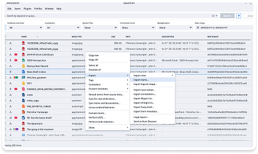

Nuix | Workstation

Nuix Workstation is a powerful forensic-grade desktop application designed for processing and analysing large volumes of electronic data.
My main contribution was to redesign the application’s interface and improve user flows from data ingestion to visualization.